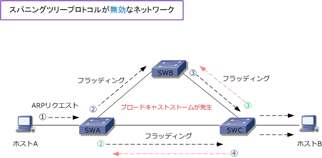
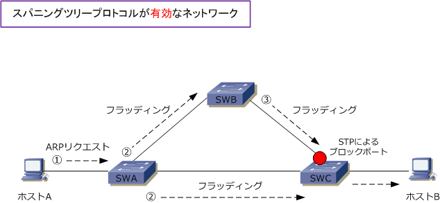

STP
STPとは
STP（Spanning Tree Protocol）は、円環上（ループ状）に形成されたレイヤー2ネットワークにおいて データトラフィックが永続的に流れ続けることを防止するプロトコルです。信頼性の高いネットワークを 構築するためには、ネットワーク機器に障害が発生しても迂回路で通信できるように、複数のスイッチを 使用したNW構成にしますが、そのような冗長化をした場合にSTPを有効にしなければ問題が発生します。
下図はSTPを有効にしていないネットワーク。ホストAがBと通信するためには、ホストBのMACアドレス を知る必要があります。そのためにホストAはARPリクエストをブロードキャストします。ARPリクエスト のフレームを受信したスイッチ（SWA）は、送信元MACアドレスをMACアドレステーブルに学習したあと、 隣接スイッチ（BとC）にフラッディングします。ここまでの動作（黒矢印の動作）では問題は発生しません。

しかしSWBとSWCは、SWAから受信したフレームを同じように処理するので、最初にSWAが送信した ブロードキャストフレームがSWAに戻ってきます。そして、SWAはそれを再びフラッディング、という 動作を繰り返してループが発生してしまいます。この状態を「ブロードキャストストーム」と言います。 ブロードキャストストームが発生すると、そのスイッチネットワークで使用可能な帯域幅を大きく消費し ブロードキャストストームを処理する機器のCPU使用率が大幅に上昇して、通信できない状態になります。
上図では、ループ状の構成にあるスイッチの全てのポートが転送できる状態であることから発生する現象。 このような状態にならないように、ループ状に構成されたスイッチのどこかのポートで、トラフィックが 転送できない状態にしておく必要があります。これをケーブルを抜いた状態などによって実現するのでは なくてSTPを使用することにより実現します。STPを使用すると、そのアルゴリズムによりあるポートが 自動的にブロッキング状態になりますが、障害発生時は自動的にそのポートが有効化されます。

BPDUとは
STP（スパニングツリープロトコル）は IEEE802.1D で標準化されたプロトコルです。STPでは、ループが 発生しないようにSTA (スパニングツリーアルゴリズム）を使用し、自動的にあるポートをブロッキング状態 にします。ブロッキングポートではフレームの送受信が行われなくなるので、ループを防ぐことができます。 また、障害発生時には、自動的にそのポートがフォワーディング状態になり、通信ができるようになります。
これらの制御は BPDU（ Bridge Protocol Data Unit ）というフレームによって自動的に行われています。 STPが有効なスイッチでは、定期的にBPDUをマルチキャストアドレス（0180.C200.0000）で送信します。 BPDUのメッセージフォーマットは以下の通りです。水色4枠がツリーの中心となるルートブリッジの選択や ポートのブロッキング位置を判別する際に使用されます。ピンク色はSTPの状態を監視するためのタイマー。
| フィールド | フィールド （日本語） |
説明 | サイズ （byte） |
|---|---|---|---|
| Protocol ID | プロトコルID | この値は常に 0 | 2 |
| Version | バージョン | STPバージョン ( 802.1d = 0 ) | 1 |
| Message Type | メッセージタイプ | 通常のBPDUタイプ ( Configuration BPDU = 0x00 ) 変更時のBPDUタイプ ( Topology Change Notification BPDU = 0x80 ) |
1 |
| Flags | フラグ | ネットワークのトポロジチェンジ（TC）を最下位ビットで示したり トポロジチェンジの確認応答（TCA)を最上位ビットで示す情報。 |
1 |
| Root ID | ルートID | ルートブリッジのブリッジID | 8 |
| Path Cost | パスコスト | ルートブリッジに到達するまでの累積コスト | 4 |
| Bridge ID | ブリッジID | スイッチ自身のブリッジID | 8 |
| Port ID | ポートID | ポートプライオリティとポート番号 | 2 |
| Message Age | メッセージエージ | ルートがBPDUを生成してから経過した秒数。 実質的にはルートブリッジに至るホップカウント。 |
2 |
| Max Age | 最大エージ | BPDUの最大保持時間。デフォルトで20秒。このタイマーの時間が 経過してもBPDUを受信できない場合は障害が発生したと認識する。 |
2 |
| Hello Time | Helloタイム | スイッチがBPDUを送信する間隔。デフォルトで2秒。 | 2 |
| Forward Delay | 転送遅延 | Listening と Learning 状態にとどまる時間。デフォルトで15秒。 | 2 |
BPDUフォーマットの中のブリッジIDとパスコストの2項目を、以下でもう少し詳しく解説します。
ブリッジID
ブリッジIDは、スイッチ自身のブリッジIDのこと。ブリッジIDは2byteのブリッジプライオリティと6byteの MACアドレスの計8byteで構成されます。スパニングツリーでは、ブリッジIDの情報によってスイッチを識別 しています。このブリッジIDが最も小さい値のスイッチがルートブリッジと呼ばれ、ツリーの中心となります。

パスコスト
パスコストはツリーの中心であるルートブリッジに至るまでの距離を示す情報です。このパスコスト値は リンクの帯域幅から自動的に計算されます（下表の値）。または管理者が手動で設定することもできます。 従来はコスト値＝1000÷帯域幅(Mbps)で算出されていましたが、その場合、1Gbpsも10Gbpsのリンクも コスト値が同じ１という値になってしまうため下表の通りのコスト値に改定されました。IEEE改定後の値。 コスト値は低い値ほど優れているので、この値が低いほどルートブリッジまでの距離が近いと判断されます。
| 帯域幅 | コスト値（IEEE改定後） | コスト値（IEEE改定前） |
|---|---|---|
| 10Gbps | 2 | 1 |
| 1Gbps | 4 | 1 |
| 100Mbps | 19 | 10 |
| 10Mbps | 100 | 100 |